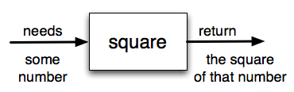

Most functions require arguments, values that control how the function does its job. For example, if you want to find the absolute value of a number, you have to indicate what the number is. Python has a built-in function for computing the absolute value:
print(abs(5)) # displays 5
print(abs(-5)) #also displays 5In this example, the arguments to the abs() function are 5 and -5.
Some functions take more than one argument. For example the math module contains a function called pow which takes two arguments, the base and the exponent. Another built-in function that takes more than one argument is max.
import math
#math.pow()
print(math.pow(2, 3)) # 8.0
print(math.pow(7, 4)) # 2401.0
#max()
print(max(7, 11)) # 11
print(max(4, 1, 17, 2, 12)) #17
print(max(3 * 11, 5 ** 3, 512 - 19, 1024 ** 0)) #503The max() function can be sent any number of arguments,
separated by commas, and will return the maximum value
sent. The arguments can be either simple values or expressions. In the last example, 503 is returned, since
it is larger than 33, 125, and 1. Note that max also works on lists of values.
Furthermore, functions like range(), int(),
abs() all return values that can be used to build more complex expressions.
So an important difference between these functions and one like drawSquare is that drawSquare was not executed because we wanted it to compute a value - on the contrary, we wrote drawSquare because we wanted it to execute a sequence of steps that caused the turtle to draw a specific shape.
Functions that return values are sometimes called fruitful functions. A chunk that doesn't return a value is called a non-fruitful function.
Fruitful functions still allow the user to provide information (arguments). However there is now an additional piece of data that is returned from the function.

How do we write our own fruitful function? Let's start by creating a very simple mathematical function that we will call square. The square function will take one number as a parameter and return the result of squaring that number. Here is the black-box diagram with the Python code following.
The return statement is followed
by an expression which is evaluated. Its result is returned to the caller as the "fruit" of
calling this function. Because the return statement can contain any
Python expression we could have avoided
creating the temporary variable squared and simply used return base**2. Try
modifying the square function above to see that this works just the same. On the other hand,
using temporary variables like squared in the program above makes debugging
easier. These temporary variables are examples of local variables, pursued further in
the next section.
Notice something important here. The name of the variable we pass as an argument - to_square - has
nothing to do with the name of the formal parameter - base. It is as if base = to_square is executed when
square is called. It doesn't matter what the value was named in the caller. In square, it's name
is base. You can see this very clearly here:
The global variables (variables defined outside of any function) and the local
variables for the square function are in separate boxes.
Step through the example, notice that the return statement not only
causes the function to return a value, but it also returns the flow of control back to
the place in the program where the function call was made.
Another important thing to notice as you step through this pythontutor demonstration is the movement of the red and green arrows. Pythontutor uses these arrows to show you where it is currently executing. Recall that the red arrow always points to the next line of code that will be executed. The light green arrow points to the line that was just executed in the last step.
When you first start running this pythontutor demonstration you will notice that there is only a red arrow and it points to line 1. This is because line 1 is the next line to be executed and since it is the first line, there is no previously executed line of code.
When you click on the next > button, notice that the red arrow moves to line 5, skipping lines 2 and 3 of the function (and the light green arrow has now appeared on line 1). Why is this? The answer is that function definition is not the same as function execution. Lines 2 and 3 will not be executed until the function is called on line 6. Line 1 defines the function and the name square is added to the global variables, but that is all the def does at that point. The body of the function will be executed later. Continue to click the next > button to see how the flow of control moves from the call, back up to the body of the function, and then finally back to line 7, after the function has returned its value and the value has been assigned to result.
Finally, there is one more aspect of function return values that should be noted. All Python functions return
the value None unless there is an explicit return statement with a value other than None. Consider the
following common mistake made by beginning Python programmers. As you step through this example, pay very
close attention to the return value in the local variables listing. Then look at what is printed when the
function returns.
The problem with this function is that even though it prints the value of the square, that value will not be
returned to the place where the call was made. Since line 6 uses the return value as the right hand side of
an assignment statement, the evaluation of the function will be None. In this
case, result will refer to that value after the assignment statement and therefore the
result printed in line 7 is incorrect. Typically, functions will return values that can be printed or
processed in some other way by the caller.
© Copyright 2018 LTC Tom Babbitt, Kyle King, Chip Schooler, Brad Miller, David Ranum, Originally created using Runestone Interactive.